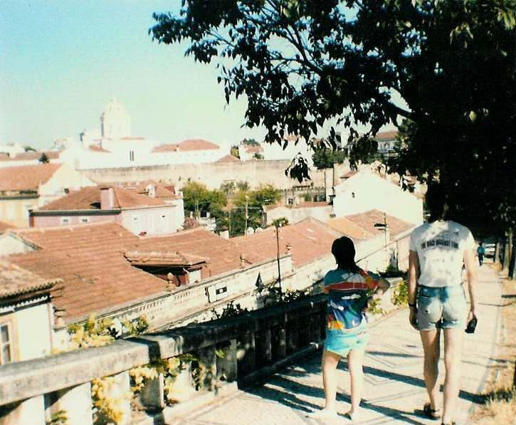

Inter Rail 1986 Day 6
Thursday 28th August 1986
The alarm went off at 7.35am. Got up, washed, dressed, packed, paid Mrs. Woman and left. Portuguese trains, at
least the local ones, don't seem to have cards on them giving you their route. We caught some sort of local train. Mrs Shout aLot, one of the
local women throwing a wobbly during the previous days meat smuggling was on board.

This train took us to Porto. The stations don't go out of their way to let you know who they are. As a result we missed the station we needed
to make our connection. The only good point was we got some nice photos of Porto on the river. Very spectacular.
At the correct Porto station Roger and I guarded the bags whilst Eli and Jon went shopping. They got a bottle of port for £1.80!. Got the
train to Coimbra. Well actually we arrived at Coimbra B and had to get a connecting train to get to the main Coimbra A station. We had to guess
which the connecting train was. Guessed it was the one everyone else was getting on!
We found ourselves a dormidas where the little woman in charge spoke some French. We got a nice room with all 4 of us in it for £2.50 each.
The shower was lovely and hot even if you couldn't tell which was the hot tap and which was the cold tap even when you twiddled them!
Once again we had a good view from our bedroom window, up towards the old part of Coimbra which is supposed to be 2nd only to Lisbon in terms
of historical and cultural importance. The town has been around since Roman times.
We went for a late afternoon/evening stroll up to the old part of town and I mean up! Tons of narrow, steep cobbled streets. The views from
the top were gorgeous. The university was at the very top. They must have very fit students.
We sat for a while in the sunshine in the Botanic gardens by a fountain after dicing with death to have our photo taken with JPII on a local
roundabout.
Back in the dormidas we found atletics on the TV. We were just in time to see the medal ceremony for the mens 800m. Britain were 1st, 2nd and
3rd. Union Jacks and God save the Queen all over the place. Waved, cheered and generally upset the Portuguese who were also watching the TV.
At the start of the evening meal had to have great self control. Melon, parma ham, shrimps and olives were put in front of us. Free to look at
but if started, costing money. We had the local delicacy, goat in red wine sauce (which was delicious) followed by black coffee all washed down
with white wine. £2.75 the lot.
Too knackered to play cards so worked out distance travelled, read books and planning the next days movements. Alarm set for 8.00am to catch
the 9.05am train from Coimbra B to Lisboa. Connection then on underground to another Lisbon station and then out to the sunny coastline and
beaches of Estoril. Went to sleep really quickly but an indigestion attack plus dust aroused from Eli and Roger's bed and mattress moving
resulted in an asthma attack. Not a particulary good nights sleep
Note
- Begging is quite prevalent in Portugal. They have one speciality for trains. Blind men play accordions and wander up and down the
train accompanied by a small boy who collects the money from travellers. A lot of the locals appear to give.
{kind=link}
{kind=link}
{kind=link}